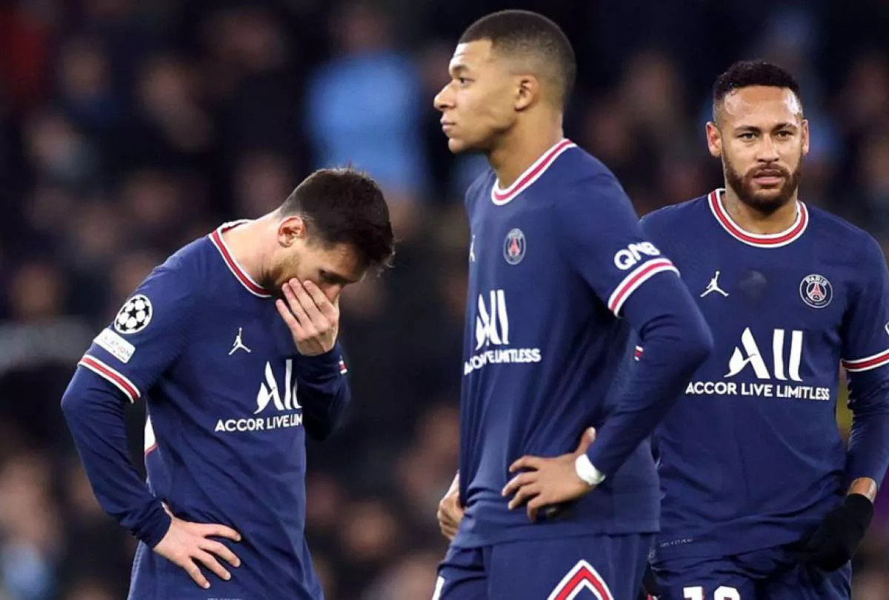

PSG queda eliminado de la Champions League
Ni con la titularidad de Messi y Kylian Mbappé le alcanzó al PSG para revertir la serie ante el conjunto alemán.
Los goles de Bayern Munich, que avanzó a cuartos, fueron anotados por Eric Maxim Choupo-Moting, a los 15 minutos
del segundo tiempo, y Serge Gnabry, a los 45.
Se trata de un golpe muy duro para todo el equipo. Una derrota que puede marcar el futuro de Messi, que todavía no
definió si se quedará en el PSG o si se irá a otro club. En ese camino, Barcelona e Inter Miami se presentan como
las opciones más firmes.